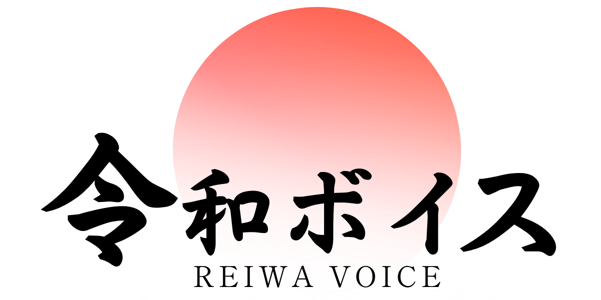

へずまりゅう と
AIが市民の不満を正式な陳情書に変え、議員が自治体に届ける。テクノロジーで、あなたの声を行政に届けます。
税金を納める現役世代が、なぜ治安の悪化に怯え、後回しにされなければならないのか。 「令和ボイス」は、耳障りの良い「計画書」と「決算データ」の矛盾をAIで徹底解析。あなたの「いいね」が、議会を動かす弾丸になります。
→ すべての陳情書を見る
→ すべての陳情書一覧を見る
2分のフォーム入力で、あなたの不満がAIによって陳情書に変わります。全国どの自治体でも対応可能です。